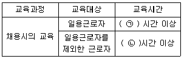
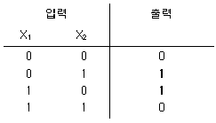
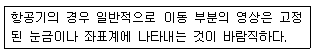
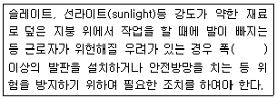
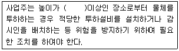
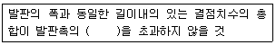

건설안전산업기사 (2018-03-04 기출문제)
1과목: 산업안전관리론
1. 주의(attention)의 특성 중 여러 종류의 자극을 받을 때 소수의 특정한 것에만 반응하는 것은?
- 선택성
- 방향성
- 단속성
- 변동성
(정답률: 83%)

2. 기업 내 정형교육 중 대상으로 하는 계층이 한정되어 있지 않고, 한 번 훈련을 받은 관리자는 그 부하인 감독자에 대해 지도원이 될 수 있는 교육방법은?
- TWI(Training Within Industry)
- MTP(Mangement Training Program)
- CCS(Civil Communication Section)
- ATT(American Telephone&Telegram Co)
(정답률: 60%)
3. 산업안전보건법령상 근로자 안전ㆍ보건 교육 기준 중 다음 ()안에 알맞은 것은?

- ㉠ 1, ㉡ 8
- ㉠ 2, ㉡ 8
- ㉠ 1, ㉡ 2
- ㉠ 3, ㉡ 6
(정답률: 68%)
4. 시행착오설에 의한 학습법칙이 아닌 것은?
- 효과의 법칙
- 준비성의 법칙
- 연습의 법칙
- 일관성의 법칙
(정답률: 64%)
5. 산업안전보건법령상 건설현장에서 사용하는 크레인, 리프트 및 곤돌라의 안전검사의 주기로 옳은 것은? (단, 이동식 크레인, 이삿짐 운반용 리프트는 제외한다.)
- 최초로 설치한 날부터 6개월마다.
- 최초로 설치한 날부터 1년마다
- 최초로 설치한 날부터 2년마다
- 최초로 설치한 날부터 3년마다
(정답률: 80%)
6. 재해예방의 4원칙이 아닌 것은?
- 원인계기의 원칙
- 예방가능의 원칙
- 사실보존의 원칙
- 손실우연의 원칙
(정답률: 74%)
7. 재해 발생 시 조치사항 중 대책수립의 목적은?
- 재해발생 관련자 문책 및 처벌
- 재해 손실비 산정
- 재해발생 원인 분석
- 동종 및 유사재해 방지
(정답률: 72%)
8. 추락 및 감전 위험방지용 안전모의 일반 구조가 아닌 것은?
- 착장체
- 충격흡수재
- 선심
- 모체
(정답률: 72%)
9. 학습은 자극에 의한 반응으로 보는 이론에 해당하는 것은?
- 손다이크(Thorndike)의 시행착오설
- 퀠러(Kohler)의 기호형태설
- 톨만(Tolman)의 기호형태설
- 레빈(Lewin)의 장이론
(정답률: 72%)
10. Safe-T-score에 대한 설명으로 틀린 것은?
- 안전관리의 수행도를 평가하는데 유용하다.
- 기업의 산업재해에 대한 과거와 현재의 안전성적을 비교 평가한 점수로 단위가 없다.
- Safe-T-score가 +2.0이상인 경우는 안전관리가 과거보다 좋아졌음을 나타낸다.
- Safe-T-score가 +2.0 ~ -2.0사이인 경우는 안전관리가 과거에 비해 심각한 차이가 없음을 나타낸다.
(정답률: 67%)
11. 사고예방대책의 기본원리 5단계 중 제4단계의 내용으로 틀린 것은?
- 인사조정
- 작업분석
- 기술의 개선
- 교육 및 훈련의 개선
(정답률: 50%)
12. 위험예지훈련 4R방식 중 각 라운드(Round)별 내용 연결이 옳은 것은?
- 1R-목표설정
- 2R-본질추구
- 3R-현상파악
- 4R-대책수립
(정답률: 77%)
13. 400명의 근로자가 종사하는 공장에서 휴업일수 127일, 증대 재해 1건이 발생한 경우 강도율은? (단, 1일 8시간으로 연 300일 근무조건으로 한다.)
- 10
- 0.1
- 1.0
- 0.01
(정답률: 52%)
14. 산업안전보건법렵상 관리감독자의 업무의 내용이 아닌 것은?
- 해당 작업에 관련되는 기계ㆍ기구 또는 설비의 안전ㆍ보건점검 및 이상유뮤의 확인
- 해당 사업장 산업보건의 지도ㆍ조언에 대한 협조
- 위험성평가를 위한 업무에 기인하는 유해ㆍ위험요인의 파악 및 그 결과에 따라 개선조치의 시행
- 작성된 물질안전보건자료의 게시 또는 비치에 관한 보좌 및 조언ㆍ지도
(정답률: 69%)
15. 산업안전보건법령상 안전ㆍ보건표지 중 지시 표지사항의 기본모형은?
- 사각형
- 원형
- 삼각형
- 마름모형
(정답률: 71%)
16. 안전심리의 5대 요소에 해당하는 것은?
- 기질(temper)
- 지능(intelligence)
- 감각(sense)
- 환경(environmrnt)
(정답률: 64%)
17. 헤드십(Headship)에 관한 설명으로 틀린 것은?
- 구성원과의 사회적 간격이 좁다.
- 지휘의 형태는 권위주의적이다.
- 권한의 부여는 조직으로부터 위임받는다.
- 권한귀속은 공식화된 규정에 의한다.
(정답률: 74%)
18. 매슬로우(Maslow)의 욕구단계 이론의 요소가 아닌 것은?
- 생리적 욕구
- 안전에 대한 욕구
- 사회적 욕구
- 심리적 욕구
(정답률: 76%)
19. 학생이 마음속에 생각하고 있는 것을 외부에 구체적으로 실현하고 형상화하기 위하여 자기 스스로가 계획을 세워 수행하는 학습활동으로 이루어지는 학습지도의 형태는?
- 케이스 메소드(Case mathod)
- 패널 디스커션(panel discussion)
- 구안법(Project method)
- 문제법(Problem method)
(정답률: 75%)
20. 부하의 행동에 영향을 주는 리더십 중 조언, 설명, 보상조건 등의 제시를 통한 적극적인 방법은?
- 강요
- 모범
- 제언
- 설득
(정답률: 72%)
2과목: 인간공학 및 시스템안전공학
21. 체계분석 및 설계에 있어서 인간공학의 가치와 가장 거리가 먼 것은?
- 성능의 향상
- 인력의 이용율의 감소
- 사용자의 수용도 향상
- 사고 및 오용으로부터의 손실 감소
(정답률: 73%)
22. 소음을 방지하기 위한 대책으로 틀린 것은?
- 소음원 통제
- 차폐장치 사용
- 소음원 격리
- 연속 소음 노출
(정답률: 80%)
23. 자연습구온도가 20℃이고, 흑구온도가 30℃일 때, 실내의 습구흑구온도지수(WBGT : wet-bulb globe temperature)는 얼마인가?
- 20℃
- 23℃
- 25℃
- 30℃
(정답률: 58%)
24. 안전성의 관점에서 시스템을 분석 평가하는 접근방법과 거리가 먼 것은?
- “이런 일은 금지한다.”의 개인판단에 따른 주관적인 방법
- “어떻게 하면 무슨 일이 발생할 것인가?”의 연역적인 방법
- “어떤 일을 하면 안 된다.”라는 점검표를 사용하는 직관적인 방법
- “어떤 일이 발생하였을 때 어떻게 처리하여야 안전한가?”의 귀납적인 방법
(정답률: 73%)
25. 시각적 표지 장치를 사용하는 것이 청각적 표시장치를 사용하는 것보다 좋은 경우는?
- 메시지가 후에 참고되지 않을 때
- 메시지가 공간적인 위치를 다룰 때
- 메시지가 시간적인 사건을 다룰 때
- 사람의 일이 연속적인 움직임을 요구할 때
(정답률: 60%)
26. 인체 측정치의 응용 원칙과 거리가 먼 것은?
- 극단치를 고려한 설계
- 조절 범위를 고려한 설계
- 평균치를 기준으로 한 설계
- 기능적 치수를 이용한 설계
(정답률: 42%)
27. 다음의 연산표에 해당하는 논리연산은?

- XOR
- AND
- NOT
- OR
(정답률: 60%)
28. 산업현장에서 사용하는 생산설비의 경우 안전장치가 부착되어 있으나 생산성을 위해 제거하고 사용하는 경우가 있다. 이러한 경우를 대비하여 설계 시 안전장치를 제거하면 작동이 안 되는 구조를 채택하고 있다. 이러한 구조는 무엇인가?
- Fail Safe
- Fool Proof
- Lock Out
- Tamper Proof
(정답률: 46%)
29. 항공기 위치 표시장치의 설계원칙에 있어, 다음 보기의 설명에 해당하는 것은?

- 통합
- 양립적 이동
- 추종표시
- 표시의 현실성
(정답률: 60%)
30. 시스템안전프로그램계획(SSPP)에서 “완성해야 할 시스템안전업무”에 속하지 않는 것은?
- 정성 해석
- 운용 해석
- 경제성 분석
- 프로그램 심사의 참가
(정답률: 47%)
31. 휘도(luminance)의 척도 단위(unit)가 아닌 것은?
- fc
- fL
- mL
- cd/m2
(정답률: 49%)
32. 선형 조정장치를 16cm 옮겼을 때, 선형표시장치가 4cm움직였다면, C/R비는 얼마인가?
- 0.2
- 2.5
- 4.0
- 5.3
(정답률: 64%)
33. 신체 반응의 척도 중 생리적 스트레인의 척도로 신체적 변화의 측정 대상에 해당하지 않는 것은?
- 혈압
- 부정맥
- 혈액성분
- 심박수
(정답률: 76%)
34. 10시간 설비 가동 시 설비고장으로 1시간 정지하였다면 설비고장강도율은 얼마인가?
- 0.1%
- 9%
- 10%
- 11%
(정답률: 61%)
35. 인간공학적 부품배치의 원칙에 해당하지 않은 것은?
- 신뢰성의 원칙
- 사용 순서의 원칙
- 중요성의 원칙
- 사용 빈도의 원칙
(정답률: 66%)
36. 근골격계 질환의 인강공학적 주요 위험요인과 가장 거리가 먼 것은?
- 과도한 힘
- 부적절한 자세
- 고온의 환경
- 단순 반복 작업
(정답률: 76%)
37. FTA의 활용 및 기대효과가 아닌 것은?
- 시스템의 결함 진단
- 사고원인 규명의 간편화
- 사고원인 분석의 정량화
- 시스템의 결함 비용 분석
(정답률: 64%)
38. 시스템 안전을 위한 업무 수행 요건이 아닌 것은?
- 안전활동의 계획 및 관리
- 다른 시스템 프로그램과 분리 및 배제
- 시스템 안전에 필요한 사람의 동일성 식별
- 시스템 안전에 대한 프로그램 해석 및 평가
(정답률: 64%)
39. 컷셋(cut sets)과 최소 패스셋(MiNiMai path sets)을 정의한 것으로 맞는 것은?
- 컷셋은 시스템 고장을 유발시키는 필요 최소한의 고장들의 집합이며, 최소 패스셋은 시스템의 신뢰성을 표시한다.
- 컷셋은 시스템 고장을 유발시키는 기본 고장들의 집합이며, 최소 패스셋은 시스템의 불신뢰도를 표시한다.
- 컷셋은 그 속에 포함되어 있는 모든 기본 사상이 일어났을 때 톱 사상을 일으키는 기본사상의 집합이며, 최소 패스셋은 시스템의 신뢰성을 표시한다.
- 컷셋은 그 속에 포함되어 있는 모든 기본사상이 일어났을 때 톱 사상을 일으키는 기본사상의 집합이며, 최소 패스셋은 시스템의 성공을 유발하는 기본사상의 집합이다.
(정답률: 65%)
40. 산업안전 분야에서의 인간공학을 위한 제반 언급사항으로 관계가 먼 것은?
- 안전관리자와의 의사소통 원활화
- 인간과오 방지를 위한 구체적 대책
- 인간행동 특성자료의 정량화 및 축적
- 인간-가계체의 설계 개선을 위한 기금의 축적
(정답률: 69%)
3과목: 건설시공학
41. 평판재하시험용 시험기구와 거리가 먼 것은?
- 잭(jack)
- 틸트미터(tilt mater)
- 로드셀(Load cell)
- 다이얼 게이지(Dial gauge)
(정답률: 42%)
42. 표준관입시헙은 63.5Kg의 추를 76cm높이에서 자유낙하시켜 샘플러가 일정 깊이까지 관입하는데 소요되는 타격 회수(N)로 시험하는데 그 깊이로 옳은 것은?
- 15cm
- 30cm
- 45cm
- 60cm
(정답률: 68%)
43. 철근 콘크리트 공사에서 콘크리트 타설 후 거푸집 존치기간을 가장 길게 해야 할 부재는?
- 슬래브 밑
- 기둥
- 기초
- 벽
(정답률: 71%)
44. 철골공사의 녹막이칠에 관한 설명으로 옳지 않은 것은?
- 초음파탐상검사에 지장을 미치는 범위는 녹막이질을 하지 않는다.
- 바탕만들기를 한 강재표면은 녹이 생기기 쉽기 때문에 즉시 녹막이칠을 하여야한다.
- 콘크리트에 묻히는 부분에는 녹막이칠을 하여야 한다.
- 현장 용접 예정부분은 용접부에서 100mm 이내에 녹막이칠을 하지 않는다.
(정답률: 70%)
45. 공사현장의 소음ㆍ지동 관리를 위한 내용 중 옳지 않은 것은?
- 일정면적 이상의 건축공사장은 특정공사 사전신고를 한다.
- 방음벽 등 차음ㆍ방진 시설을 설치한다.
- 파일공사는 가능한 타격공법을 시행한다.
- 해체공사 시 압쇄공법을 채택한다.
(정답률: 77%)
46. 단가 도급계약 제도에 관한 설명으로 옳지 않은 것은?
- 시급한 공사인 경우 계약을 간단히 할 수 있다.
- 설계변경으로 인한 수량증감의 계산이 어렵고 일식도급보다 복잡하다.
- 공사비가 높아질 염려가 있다.
- 총공사비를 예측하기 힘들다.
(정답률: 61%)
47. 철골부재의 절단 및 가공조립에 사용되는 기계의 선택이 잘못된 것은?
- 메탈터치부위 가공-페이싱머신(facing machine)
- 형강류 절단-해크소(hack saw)
- 판재류 절단-플레이트 쉐어링기(plate shearing)
- 볼트접합부 구멍 가공-로터리 플레이너(rotaty planer)
(정답률: 58%)
48. 콘크리트 타설 후 콘크리트의 소요 강도를 잔기간에 확보하기 위하여 고온ㆍ고압에서 양생하는 방법은?
- 봉합양생
- 습윤양생
- 전기양생
- 오토클레이브양생
(정답률: 64%)
49. 거푸집 박리제 시공 시 유의사항으로 옳지 않은 것은?
- 박리제가 철근에 묻어도 부착강도에는 영향이 없으므로 충분히 도포하도록 한다.
- 박리제의 도포 전에 거푸집면의 청소를 철저히 한다.
- 콘크리트 색조에는 영향이 없는지 확인 후 사용한다.
- 콘크리트 타설 시 거푸집의 온도 및 탈형 시간을 준수한다.
(정답률: 78%)
50. 슬럼프 저하 등 워커빌리티의 변화가 생기기 쉬우며 동일슬럼프를 얻기 위한 단위수량이 많아 콜드조인트가 생기는 문제점을 갖고 있는 콘크리트는?
- 한중콘크리트
- 매스콘크리트
- 서중콘크리트
- 팽창콘크리트
(정답률: 46%)
51. 거푸집공사에서 거푸집상호간의 간격을 유지하는 것으로서 보통 철근제, 파이프제를 사용하는 것은?
- 제크 플레이트(Deck plate)
- 격리제(Separator)
- 박리제(Form oil)
- 캠버(Camber)
(정답률: 67%)
52. 정액도급 제약제도에 관한 설명으로 옳지 않은 것은?
- 경쟁입찰 시 공사비가 저렴하다
- 건축주와의 의견조정이 용이하다.
- 공사설계변경에 따른 도급액 증감이 곤란하다.
- 이윤관계로 공사가 조악해질 우려가 있다.
(정답률: 60%)
53. 주문받은 건설업자가 대상계획의 금융, 토지조달, 설계, 시공 등 기타 모든 요소를 포괄한 도급계약 방식은?
- 실비정산 보수가산 도급
- 턴키도급(trun-key)
- 정액도급
- 공동도급(joint venture)
(정답률: 80%)
54. 건축물의 철근 조립 순서로서 옳은 것은?
- 기초-기둥-보-slab-벽-계단
- 기초-기둥-벽-slab-보-계단
- 기초-기둥-벽-보-slab-계단
- 기초-기둥-slab-보-벽-계단
(정답률: 62%)
55. 말뚝의 이음 공법 중 강성이 가장 우수한 방식은?
- 장부식 이음
- 충전식 이음
- 리벳식 이음
- 용접식 이음
(정답률: 72%)
56. 토공사 시 발생하는 히빙파괴(heaving faliure)의 방지대책으로 가장 거리가 먼 것은?
- 흙막이벽의 근입깊이를 늘린다.
- 터파기 밑면 아래의 지반을 개량한다.
- 지하수위를 저하시킨다.
- 아일랜드컷 공법을 적용하여 중량을 부여한다.
(정답률: 45%)
57. 토공사와 관련된 용어에 관한 설명으로 옳지 않은 것은?
- 간극비 : 흙의 간극 부분 중량과 흙입자 중량의 비
- 겔타임(gel-time) : 약액을 혼합한 후 시간이 경과하여 유동성을 상실하게 되기까지의 시간
- 동결심도 : 지표면에서 지하 동결선까지의 길이
- 수동활동면 : 수동토압에 의한 파괴 시토체의 활동면
(정답률: 53%)
58. 다음 중 건설공사용 공정표의 종류에 해당되지 않는 것은?
- 횡선식 공정표
- 네트워크공정표
- PDM기법
- WBS
(정답률: 59%)
59. 중용열포틀랜드시멘트의 특성이 아닌 것은?
- 블리딩 현상이 크게 나타난다.
- 장기강도 및 내화학성의 확보에 유리하다.
- 모르타르의 공극 충전효과가 크다.
- 내침식성 및 내구성이 크다.
(정답률: 56%)
60. 철근이음공법 중 지름이 큰 철근을 이음할 경우 철근의 재료를 절감하기 위하여 활용하는 공법이 아닌 것은?
- 가스압점이음
- 맞댄용점이음
- 나사식커플링이음
- 겹친이음
(정답률: 61%)
4과목: 건설재료학
61. 도막방수에 관한 설명으로 옳지 않은 것은?
- 복잡한 형상에도 시공이 용이하다
- 시트간의 접착이 불완전 할 수 있다.
- 내약품성이 우수하다.
- 균일한 두께의 시공이 곤란하다.
(정답률: 46%)
62. 단열재료 중 무기질 재료가 아닌 것은?
- 유리면
- 경질우레탄 폼
- 세라믹 섬유
- 암면
(정답률: 47%)
63. 알루미늄의 성질에 관한 설명으로 옳지 않은 것은?
- 반사율이 작으므로 열차단재로 쓰인다.
- 독성이 없으며 무취이고 위생적이다.
- 산과 알칼리에 약하여 콘크리트에 접하는 면에는 방식처리를 요한다.
- 융점이 낮기 때문에 용해주조도는 좋으나 내화성이 부족하다.
(정답률: 57%)
64. 점토 재료에서 SK 번호는 무엇을 의미하는가?
- 소성하는 가마의 종류를 표시
- 소성온도를 표시
- 제품의 종류를 표시
- 점토의 성분을 표시
(정답률: 63%)
65. 목재의 재료적 특징으로 옳지 않은 것은?
- 온도에 대한 신축이 적다.
- 열전도율이 작아 보온성이 뛰어나다.
- 강재에 비하여 비강도가 작다.
- 음의 흡수 및 차단성이 크다.
(정답률: 55%)
66. 점토재료 중 자기에 관한 설명으로 옳은 것은?
- 소지는 적색이며, 다공질로써 두드리면 탁음이 난다.
- 흡수율이 5% 이상이다.
- 1000℃ 이하에서 소성된다.
- 위생도기 및 타일 등으로 사용된다.
(정답률: 50%)
67. 보통 콘크리트에서 인장강도/압축강도의 비로 가장 알맞은 것은?
- 1/2~1/5
- 1/5~1/7
- 1/9~1/13
- 1/17~1/10
(정답률: 62%)
68. 구조용 강재에 관한 설명으로 옳지 않은 것은?
- 탄소의 함유량을 1%까지 증가시키면 강도와 경도는 일반적으로 감소한다.
- 구조용 탄소강은 보통 저탄소강이다.
- 구조용강 중 연강은 철근 또는 철골재로 사용된다.
- 구조용 강재의 대부분은 압연강재이다.
(정답률: 52%)
69. 플라스틱 제품에 관한 설명으로 옳지 않은 것은?
- 내수성 및 내투습성이 양호하다.
- 전기절연성이 양호하다.
- 내열설 및 내후성이 약하다.
- 내마모성 및 표면강도가 우수하다.
(정답률: 66%)
70. 벽, 기둥 등의 모서리 부분에 미장바름을 보호하기 위한 철물은?
- 줄눈대
- 조이너
- 인서트
- 코너비드
(정답률: 77%)
71. 극장 및 영화관 등의 실내천장 또는 내벽에 붙여 음향조절 및 장식효과를 겸하는 재료는?
- 플로링 보드
- 프린트 합판
- 집성 목재
- 코펜하겐 리브
(정답률: 72%)
72. 2장 이상의 판유리 사이에 강하고 투명하면서 집착성이 강한 플라스틱 필름을 삽입하여 제작한 안전유리를 무엇이라 하는가?
- 접합유리
- 복층유리
- 강화유리
- 프리즘유리
(정답률: 51%)
73. 보통 벽돌이 적색 또는 적갈색을 띠고 있는 것을 원료점토 중에 무엇을 포함하고 있기 때문인가?
- 산화철
- 산화규소
- 산화칼륨
- 산화나트륨
(정답률: 58%)
74. 프리플레이스트 콘크리트에서 주입용 모르타르에 쓰이는 모래의 조립률(FM값)범위로 가장 알맞은 것은?
- 0.7~1.2
- 1.4~2.2
- 2.3~3.7
- 3.8~4.0
(정답률: 53%)
75. 도막의 일부가 하지로부터 부풀어 지름이 10mm되는 것부터 좁쌀 크기 또는 미세한 수포가 발생하는 도막결함은?
- 백화
- 변색
- 부풀음
- 번짐
(정답률: 71%)
76. 돌로마이트 플라스터에 관한 설명으로 옳은 것은?
- 소석회에 비해 점성이 낮고, 작업성이 좋지 않다.
- 여물을 혼합하여도 건조수축이 크기 때문에 수축 균열이 발생되는 결점이 있다.
- 회반죽에 비해 조기강도 및 최종강도가 작다.
- 물과 반응하여 경화하는 수경성 재료이다.
(정답률: 42%)
77. 목재의 함수율에 관한 설명으로 옳지 않은 것은?
- 약 30%의 함수상태를 섬유포화점이라 한다.
- 목재는 비중과 함수율에 따라 강도가 수축에 영향을 받는다.
- 기건상태는 목재의 수분이 전혀 없는 상태를 말한다.
- 함수율이란 절건상태인 목재중량에 대한 함수량의 백분율이다.
(정답률: 61%)
78. 시멘트의 분말도에 관한 설명으로 옳지 않은 것은?
- 시멘트의 분말도는 단위중량에 대한 표면적이다.
- 분말도가 큰 시멘트일수록 물과 접촉하는 표면적이 증대되어 수화반응이 촉진된다.
- 분말도 측정은 슬럼프 시험으로 한다.
- 분말도가 지나치게 클 경우에는 풍화되기가 쉽다.
(정답률: 57%)
79. 석유 아스팔트에 속하지 않는 것은?
- 블로운 아스팔트
- 스트레이트 아스팔트
- 아스팔타이트
- 컷백 아스팔트
(정답률: 43%)
80. 석재을 다듬을 때 쓰는 방법으로 양날망치로 정다듬한 면을 일정방향으로 찍어 다듬는 석재 표면 마무리 방법은?
- 잔다듬
- 도드락다듬
- 흑두기
- 거친갈기
(정답률: 66%)
5과목: 건설안전기술
81. 흙의 연경도(Consistency)에서 반고체 상태와 소성상태의 한계를 무엇이라 하는가?
- 액성한계
- 소성한계
- 수축한계
- 반수축한계
(정답률: 68%)
82. 충고가 높은 슬래브 거푸집 하부에 적용하는 무지주 공법이 아닌 것은?
- 보우빔(bow beam)
- 철근일체형 데크플레이트(deck plate)
- 페코빔(pecco beam)
- 솔져시스템(soldier system)
(정답률: 54%)
83. 굴착작업 시 근로자의 위험을 방지하기 위하여 해당 작업, 작업장에 대한 사전조사를 실시하여야 하는데 이 사전조사 항목에 포함되지 않는 것은?
- 지반의 지하수위 상태
- 형상ㆍ지질 및 지층의 상태
- 굴착기의 이상 유무
- 매설물 등의 유무 또는 상태
(정답률: 57%)
84. 사질토지반에서 보일링(boiling)현상에 의한 위험성이 예상될 경우의 대책으로 옳지 않은 것은?
- 흙막이 말뚝의 밑둥넣기를 깊게 한다.
- 굴착 저면보가 깊은 지반을 불투수로 개량한다.
- 굴착 밑 투수층에 만든 피트(pit)를 제거한다.
- 흙막이벽 주위에서 배수시설을 통해 수두차를 적게 한다.
(정답률: 58%)
85. 재료비가 30억원, 직접노무비가 50억원인 건설공사의 예정가격상 안전관리비로 옳은 것은? (단, 일반건설공사(갑)에 해당 되며 계상기준은 1.97%임)
- 56,400,000원
- 94,000,000원
- 150,400,000원
- 157,600,000원
(정답률: 57%)
86. 다음 ()안에 알맞은 수치는?

- 30cm
- 40cm
- 50cm
- 60cm
(정답률: 64%)
87. 발파공사 암질 변화구간 및 이상암질 출현 시 적용하는 암질 판별방법과 거리가 먼 것은?
- R.Q.D
- RMR 불류
- 탄성파 속도
- 하중계(Load Cell)
(정답률: 60%)
88. 화물을 적재하는 경우 준수하여야 할 사항으로 옳지 않은 것은?
- 침하 우려가 없는 튼튼한 기반 위에 적재할 것
- 화물의 압력정도와 관계없이 건물의 벽이나 칸막이 등을 이용하여 화물을 기대어 적재할 것
- 하중이 한쪽으로 치우치지 않도록 쌓을 것
- 불안정할 정도로 높이 쌓아 올리지 말 것
(정답률: 76%)
89. 토사 붕괴의 내적 요인이 아닌 것은?
- 사면, 법면의 경사 증가
- 절토 사면의 토질구성 이상
- 성토 사면의 토질구성 이상
- 토석의 강도 저하
(정답률: 55%)
90. 철골용접 작업자의 전격 방지를 위한 주의사항으로 옳지 않은 것은?
- 보호구와 복장을 구비하고, 기름기가 묻었거나 젖은 것은 착용하지 않은 것
- 작업 중지의 경우에는 스위치를 떼어 놓을 것
- 개로 전압이 높은 교류 용접기를 사용할 것
- 좁은 장소에서의 작업에서는 신체를 노출시키지 않을 것
(정답률: 73%)
91. 유해ㆍ위험 방지계획서 제출 시 첨부서류의 항목이 아닌 것은?
- 보호장비 폐기계획
- 공사개요서
- 산업안전보건관리비 사용계획
- 전체공정표
(정답률: 53%)
92. 철골작업을 중지하여야 하는 풍속과 강우량 기준으로 옳은 것은?
- 풍속 : 10m/sec 이상, 강우량 : 1mm/h 이상
- 풍속 : 5m/sec 이상, 강우량 : 1mm/h 이상
- 풍속 : 10m/sec 이상, 강우량 : 2mm/h 이상
- 풍속 : 5m/sec 이상, 강우량 : 2mm/h 이상
(정답률: 74%)
93. 잠함 또는 우물통의 내부에서 근로자가 굴착작업을 하는 경우의 준수사항으로 옳지 않은 것은?
- 산소결핍 우려가 있는 경우에는 산소의 농도를 측정하는 사람을 지명하여 측정하도록 할 것
- 근로자가 안전하게 오르내리기 위한 설비를 설치할 것
- 굴착깊이가 20m를 초과하는 경우에는 해당작업장소와 외부와의 연락을 위한 통신설비 등을 설치할 것
- 잠함 또는 우물통의 급격한 침하에 의한 위험을 방지하기 위하여 바닥으로부터 천장 또는 보까지의 높이는 2m 이내로 할 것
(정답률: 54%)
94. 도심지에서 주변에 주요시설물이 있을 때 침하와 변위를 적게 할 수 있는 가장 적당한 흙막이 공법은?
- 동결공법
- 샌드드레인공법
- 지하연속벽공법
- 뉴매틱케이슨공법
(정답률: 61%)
95. 지반 종류에 따른 굴착면의 기울기 기준으로 옳지 않은 것은?(2021년 11월 19일 개정된 규정 적용됨)
- 보통 흙의 습지 - 1:1~1:1.5
- 연암 - 1:0.7
- 풍화암 - 1:1.0
- 보통 흙의 건지 - 1:0.5~1:1
(정답률: 57%)
96. 다음은 산업안전보건법령에 따른 작업장에서의 투하설비 등에 관한 사항이다. 빈 칸에 들어갈 내용으로 옳은 것은?

- 2m
- 3m
- 5m
- 10m
(정답률: 43%)
97. 달비계(곤돌라의 달비계는 제외)의 최대 적재하중을 정하는 경우 달기와이어로프 및 달기강선의 안전계수 기준으로 옳은 것은?
- 5이상
- 7이상
- 8이상
- 10이상
(정답률: 38%)
98. 다음은 비계발판용 목재재료의 강도상의 결점에 대한 조사기준이다. ()안에 들어갈 내용으로 옳은 것은?

- 1/2
- 1/3
- 1/4
- 1/6
(정답률: 41%)
99. 근로자의 추락 등의 위험을 방지하기 위하여 안전난간을 설치하는 경우 안전난간은 구조적으로 가장 취약한 지점에서 가장 취약한 방향으로 작용하는 얼마 이상의 하중에 견딜 수 있는 튼튼한 구조이어야 하는가?
- 50[kg]
- 100[kg]
- 150[kg]
- 200[kg]
(정답률: 56%)
100. 다음 중 쇼벨계 굴착기계에 속하지 않은 것은?
- 파워쇼벨(power shovel
- 크램쉘(clamshell)
- 스크레이퍼(scraper)
- 드래그라인(draglini)
(정답률: 59%)